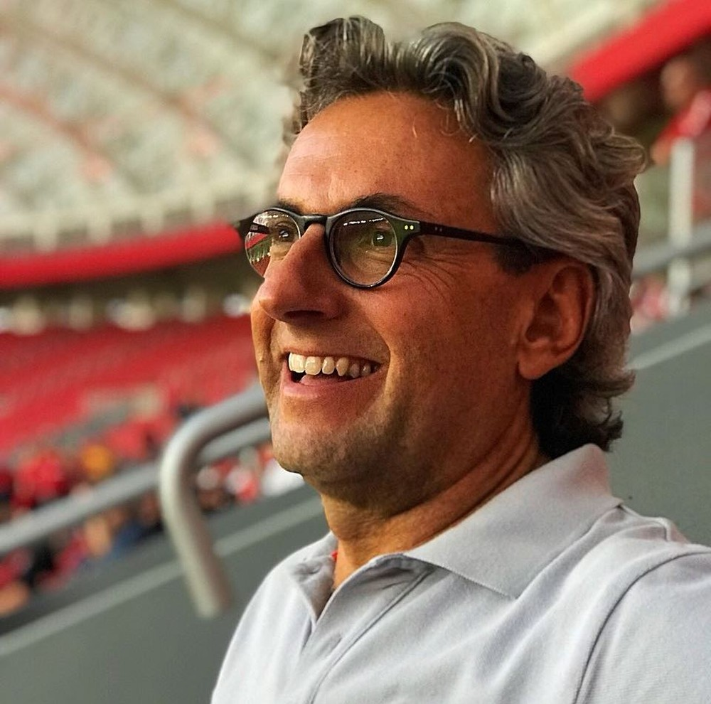
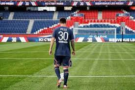

Inter anuncia Emilio Papaléo Zin como novo vice de futebol
Postado em 11 de Agosto de 2021 O Inter tem um novo vice-presidente de futebol. O clube anunciou na noite desta terça-feira o nome de Emilio Papaléo Zin, 57 anos, para o cargo que estava vago desde a saída de João Patrício Hermann.
Postado por Diego SantosA chegada de Messi ao PSG
Postado em 11 de Agosto de 2021
O PSG aproveita a contratação do diamante Messi para promover a sua cidade. Em vídeo postado nas redes sociais, provoca os sentidos dos seguidores, com belas imagens em Paris sobre paisagens, cheiros, sons, sabores e aquele tato especial, no caso, toque na bola, com o pé, do novo ídolo do local.
Postado por Diego SantosO fracasso do PSG seria uma grande vitória
Postado em 11 de Agosto de 2021 O dinheiro do estado absolutista do Catar, acumulado com a exploração e a comercialização de petróleo e de gás natural, bancou Messi no PSG. Assim como já tinha bancado Neymar e Mbappé. É através dessa riqueza que tem sido possível construir uma seleção mundial que vai vestir a camisa do time de Paris com o objetivo de conquistar a inédita Liga dos Campeões e, com isso, se tornar um clube ainda mais poderoso
Postado por Diego Santos